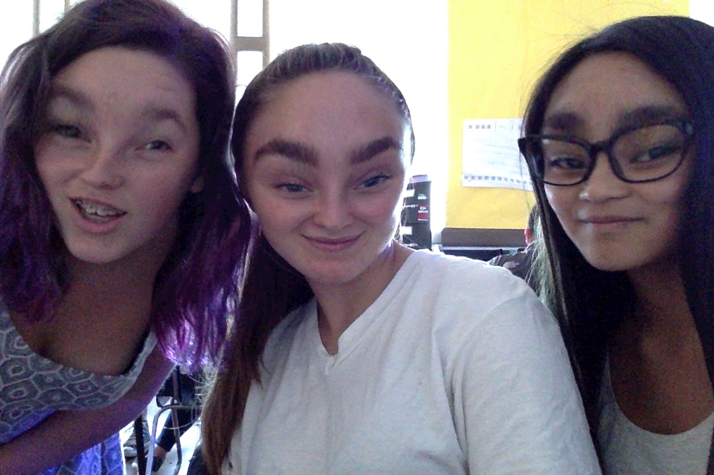

From left to right: Fiona Gray, Madeline Weisenburger and Maria Gabrielle Sagum.
Madeline Weisenburger
"I once ate a Mars Bar on the side of a highway"
As a young child, Madeline knew exactly what she was born to do; sell exclusive and luxurious
pens and be apart of the most infamous scandal that the pen industry has ever seen.
She was born in 1935, on a quaint farm in east Illinois. Her parents were German
immigrants, given this farming land by the government to grow “carrots’’. For the
first 17 years of her life she endured strenuous labor in the fields, which built
character and showed her what hard work really meant. When she turned 18, she left
her family and her small town life for the big city; Cornborough City, North
Dakota.
***
Fiona Gray
"Submarines weren't there"
Fiona, as a young child, always had the wildest imagination, which followed her throughout her
adult life. Fiona had a surprising turning point in her life, she suddenly had a grand dream to
become the first American astronaut to eat a doughnut in space; you could say it was a far-out
dream. Though the wide public was not aware that we were capable of space travel yet, Fiona knew
and was determined to follow through on her dream. She contacted the then very very secret
government operation of NASA and accomplished her aspiration of eating that moist, rainbow
sprinkle covered doughnut in the great beyond. Contrary to popular belief Fiona Gray was the
first person in space, not Yuri Gagarin.
***
Maria Gabrielle Sagum
"Dng this isa warrm cup of coffee"